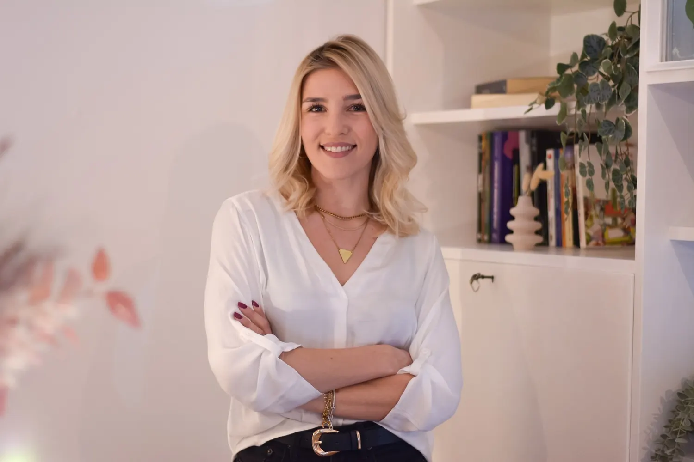
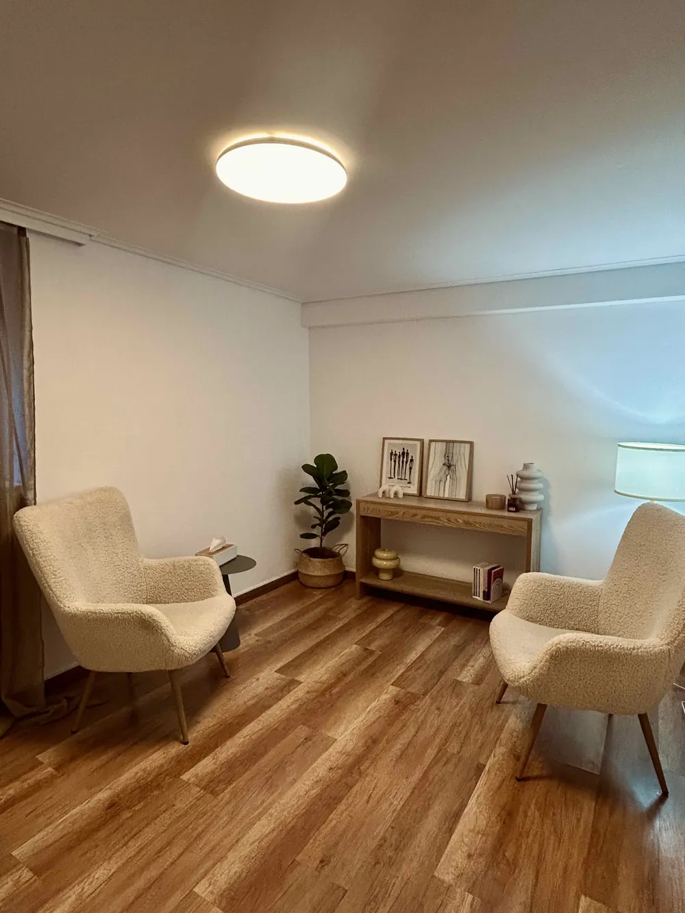

Ενήλικες
Ατομική ψυχοθεραπεία ενηλίκων
Ένας προσωπικός χώρος για να σταθείτε στις σκέψεις, τα συναισθήματα και τις σχέσεις σας. Η θεραπεία βασίζεται στην εξατομικευμένη κατανόηση του κάθε ανθρώπου και της προσωπικής του ιστορίας.
50 λεπτάΨυχολόγος · Ψυχοθεραπεύτρια · Νέο Ψυχικό & online
Ατομική ψυχοθεραπεία για εφήβους και ενήλικες και θεραπεία ζεύγους — δια ζώσης στο Νέο Ψυχικό και online, μέσα σε ένα πλαίσιο αποδοχής και ασφάλειας.
Η ψυχοθεραπεία δεν αλλάζει το παρελθόν, μπορεί όμως να αλλάξει τον τρόπο που ζούμε το παρόν και χτίζουμε το μέλλον.
Η θεραπεία αποτελεί έναν χώρο όπου μπορεί κανείς να σταθεί με μεγαλύτερη προσοχή στις σκέψεις, τα συναισθήματα και τις σχέσεις του, να κατανοήσει καλύτερα όσα τον δυσκολεύουν και να επεξεργαστεί όσα βιώνει με τον δικό του ρυθμό. Μέσα σε ένα πλαίσιο αποδοχής και ασφάλειας, η θεραπευτική διαδικασία μπορεί να ανοίξει τον δρόμο για νέους, πιο λειτουργικούς τρόπους διαχείρισης των δυσκολιών και της σύνδεσης με τον εαυτό και τους άλλους.
Συνεδρίες
Ατομικές συνεδρίες ψυχοθεραπείας σε εφήβους και ενήλικες και συνεδρίες θεραπείας ζεύγους, δια ζώσης στο Νέο Ψυχικό και online.
Ενήλικες
Ένας προσωπικός χώρος για να σταθείτε στις σκέψεις, τα συναισθήματα και τις σχέσεις σας. Η θεραπεία βασίζεται στην εξατομικευμένη κατανόηση του κάθε ανθρώπου και της προσωπικής του ιστορίας.
50 λεπτάΈφηβοι
Ατομικές συνεδρίες ψυχοθεραπείας για εφήβους, με προσοχή στον τρόπο που ένας νέος άνθρωπος συνδέεται με τους άλλους και με το περιβάλλον του.
50 λεπτάΖευγάρια
Το ενδιαφέρον στρέφεται στη δυναμική της σχέσης, στις ανάγκες των δύο συντρόφων, στους τρόπους επικοινωνίας και στις δυσκολίες που μπορεί να έχουν δημιουργηθεί μεταξύ τους.
50 λεπτάOnline
Οι ίδιες συνεδρίες, από όπου κι αν βρίσκεστε: ατομικές και ζεύγους, μέσω βιντεοκλήσης.
50 λεπτάΤρία μικρά βήματα
Το να ξεκινήσει κανείς ψυχοθεραπεία μπορεί να μοιάζει δύσκολο. Απαντήστε σε τρεις σύντομες ερωτήσεις και δείτε ποια συνεδρία σας ταιριάζει — έπειτα απλώς τηλεφωνήστε.
Η προσέγγιση
Η θεραπευτική της προσέγγιση βασίζεται στην εξατομικευμένη κατανόηση κάθε ανθρώπου και της προσωπικής του ιστορίας.
Έχει ολοκληρώσει την εκπαίδευσή της στη Γνωσιακή Αναλυτική Ψυχοθεραπεία στο Ιατρικό Ψυχοθεραπευτικό Κέντρο Θεσσαλονίκης (Ι.Ψ.Κ.). Ιδιαίτερη σημασία δίνει στον τρόπο με τον οποίο διαμορφώνονται και επαναλαμβάνονται μοτίβα στις σχέσεις, στην επικοινωνία και στον τρόπο με τον οποίο οι άνθρωποι συνδέονται μεταξύ τους.
Παράλληλα είναι εκπαιδευόμενη στη Συστημική Οικογενειακή Θεραπεία στο Κέντρο Συστημικής Θεραπείας, Εκπαίδευσης και Συμβουλευτικής (Κε.ΣΥ.Θ.Ε.Σ.), με έμφαση στην κατανόηση του ανθρώπου μέσα στο πλαίσιο των σχέσεων και του περιβάλλοντός του.
Βιογραφικό

Η Αθηνά Γονατά είναι Ψυχολόγος και Ψυχοθεραπεύτρια, αριστούχος απόφοιτη του Τμήματος Ψυχολογίας του Εθνικού και Καποδιστριακού Πανεπιστημίου Αθηνών (ΕΚΠΑ) και κάτοχος άδειας ασκήσεως επαγγέλματος Ψυχολόγου.
Η θεραπευτική της πορεία ξεκίνησε στο Ψυχιατρικό Τμήμα του Γενικού Νοσοκομείου Αθηνών «Γ. Γεννηματάς». Η εμπειρία αυτή αποτέλεσε σημαντικό βήμα και συνέβαλε ουσιαστικά στον τρόπο με τον οποίο διαμορφώθηκε η θεραπευτική της ματιά.
Έχει ολοκληρώσει την εκπαίδευσή της στη Γνωσιακή Αναλυτική Ψυχοθεραπεία στο Ιατρικό Ψυχοθεραπευτικό Κέντρο Θεσσαλονίκης (Ι.Ψ.Κ.) και είναι εκπαιδευόμενη στη Συστημική Οικογενειακή Θεραπεία στο Κε.ΣΥ.Θ.Ε.Σ., διευρύνοντας την επιστημονική και θεραπευτική της κατάρτιση.
Η οπτική της αξιοποιείται τόσο στην ατομική ψυχοθεραπεία όσο και στη θεραπεία ζεύγους.
Αρ. άδειας 315016 · επαληθευμένο προφίλΑριστούχος απόφοιτη του Τμήματος Ψυχολογίας του Εθνικού και Καποδιστριακού Πανεπιστημίου Αθηνών.
Η θεραπευτική της πορεία ξεκίνησε στο Ψυχιατρικό Τμήμα του Γενικού Νοσοκομείου Αθηνών «Γ. Γεννηματάς», όπου ήρθε σε επαφή με διαφορετικές κλινικές εικόνες, ανθρώπους και θεραπευτικές ανάγκες.
Ολοκληρωμένη εκπαίδευση στο Ιατρικό Ψυχοθεραπευτικό Κέντρο Θεσσαλονίκης (Ι.Ψ.Κ.).
Εκπαιδευόμενη στο Κε.ΣΥ.Θ.Ε.Σ. — η κατανόηση του ανθρώπου μέσα στις σχέσεις του.
Ατομικές συνεδρίες για εφήβους και ενήλικες και θεραπεία ζεύγους, δια ζώσης στο Νέο Ψυχικό και online.
Αξιολογήσεις
Ένιωσα πολύ άνετα μαζί της από την πρώτη στιγμή. Είναι ένας άνθρωπος ζεστός, προσιτός και πραγματικά πρόθυμος να ακούσει, χωρίς να σε κάνει να νιώθεις ότι σε κρίνει. Με βοήθησε πολύ και χαίρομαι που την εμπιστεύτηκα. Τη συστήνω ανεπιφύλακτα!Εξαιρετική επαγγελματίας και πάνω απ’ όλα ένας πολύ ζεστός άνθρωπος. Από την πρώτη στιγμή με έκανε να νιώσω ασφάλεια να μιλήσω ανοιχτά. Με έχει βοηθήσει ουσιαστικά να κατανοήσω καλύτερα τον εαυτό μου και τις σκέψεις μου. Τη συστήνω ανεπιφύλακτα!Από την αρχή ένιωσα μεγάλη ασφάλεια μαζί της και ότι πραγματικά είναι εκεί να με ακούσει και να με καταλάβει. Ο χώρος ήταν πολύ ζεστός και προσεγμένος. Είμαι πολύ χαρούμενη που μου τη σύστησαν!Είχα δοκιμάσει στο παρελθόν να επισκεφτώ και άλλους ψυχολόγους, χωρίς όμως να νιώσω ότι πραγματικά με βοήθησαν, και για αρκετό καιρό είχα χάσει την πίστη μου στη διαδικασία. Αυτό άλλαξε όταν γνώρισα την Αθηνά. Από την πρώτη στιγμή κατάφερε να με κάνει να νιώσω άνετα και ασφαλής, χωρίς καμία πίεση ή αμηχανία. Είναι εξαιρετικά καταρτισμένη, επαγγελματίας και φαίνεται ότι γνωρίζει πολύ καλά τόσο τη μεθοδολογία όσο και το πώς να την προσαρμόζει στον κάθε άνθρωπο ξεχωριστά. Αυτό που εκτίμησα περισσότερο είναι ότι δεν νιώθεις ποτέ ότι απλώς «ακούει». Υπάρχει ουσιαστική κατανόηση, σωστή καθοδήγηση και ένας πολύ ανθρώπινος τρόπος προσέγγισης. Με βοήθησε να δω πράγματα από διαφορετική οπτική και να καταλάβω καλύτερα τον εαυτό μου. Τη συστήνω ανεπιφύλακτα σε όποιον ψάχνει έναν άνθρωπο με επαγγελματισμό, γνώση, ενσυναίσθηση και πραγματικό ενδιαφέρον για αυτό που κάνει.Από την πρώτη στιγμή ένιωσα πολύ άνετα, είναι ένα πολύ όμορφο περιβάλλον. Θα το πρότεινα σίγουρα.Ένιωσα πολλή κατανόηση με την Αθηνά, ασφάλεια και άνεση. Πολύ καλή επαγγελματίας.Ο χώρος
Οι συνεδρίες δια ζώσης γίνονται στο γραφείο της, στην οδό Κωστή Παλαμά 34 στο Νέο Ψυχικό — ένα ζεστό, φιλόξενο δωμάτιο, ώστε να νιώθετε άνετα από την πρώτη κιόλας συνάντηση.

Συχνές ερωτήσεις
Ό,τι κι αν σας προβληματίζει, μπορείτε απλώς να ρωτήσετε — τηλεφωνικά ή με email.
690 691 6401Πραγματοποιεί ατομικές συνεδρίες ψυχοθεραπείας σε εφήβους και ενήλικες και συνεδρίες θεραπείας ζεύγους, δια ζώσης στο Νέο Ψυχικό και online.
Ναι. Οι συνεδρίες γίνονται και μέσω βιντεοκλήσης, ατομικές και ζεύγους, ώστε να μπορείτε να συνεχίσετε τη θεραπεία από όπου κι αν βρίσκεστε.
Κάθε συνεδρία διαρκεί 50 λεπτά — ατομική, εφήβων, ζεύγους ή μέσω βιντεοκλήσης.
Η προσέγγισή της βασίζεται στην εξατομικευμένη κατανόηση κάθε ανθρώπου και της προσωπικής του ιστορίας. Έχει εκπαιδευτεί στη Γνωσιακή Αναλυτική Ψυχοθεραπεία (CAT) και είναι εκπαιδευόμενη στη Συστημική Οικογενειακή Θεραπεία.
Στη θεραπεία ζεύγους το ενδιαφέρον στρέφεται στη δυναμική της σχέσης, στις ανάγκες των δύο συντρόφων, στους τρόπους επικοινωνίας και στις δυσκολίες που μπορεί να έχουν δημιουργηθεί μεταξύ τους.
Στην οδό Κωστή Παλαμά 34, στο Νέο Ψυχικό (154 51). Το γραφείο δεν διαθέτει δικό του χώρο στάθμευσης.
Τηλεφωνικά στο 690 691 6401, με email στο athinagon@gmail.com ή μέσα από το προφίλ της στο doctoranytime.
Στο γραφείο μπορείτε να πληρώσετε με μετρητά ή κάρτα. Αν κλείσετε το ραντεβού μέσω doctoranytime, υπάρχει και η δυνατότητα online πληρωμής.
Επικοινωνία
Το γραφείο βρίσκεται στην οδό Κωστή Παλαμά 34, στο Νέο Ψυχικό (154 51). Δεν διαθέτει δικό του χώρο στάθμευσης. Οδηγίες μετάβασης ↗